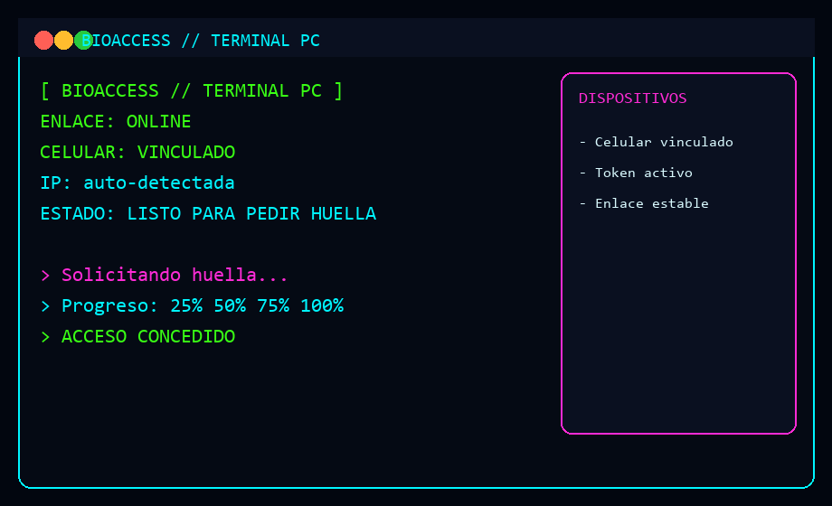
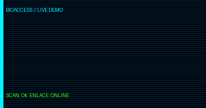

BIOACCESS
/ QUÉ ES
BioAccess es un sistema de acceso biométrico que une una terminal de escritorio con un celular. La PC envía una solicitud, el celular captura la huella y, si es válida, la PC concede el acceso.
Terminal PC
Interfaz cyberpunk, servidor embebido, vinculación y aprobación de dispositivos.
App móvil
Escáner biométrico real o simulado, historial, ajustes y vinculación por QR, código o USB.
Servidor
FastAPI + WebSocket + descubrimiento UDP para encontrar la PC en la red.
Simulador
Un solo archivo Python que reproduce todo el sistema en una sola PC.
/ CÓMO FUNCIONA
La PC inicia el servidor y muestra su IP.
El celular busca la PC en la red.
Se vinculan por QR, código o USB.
La PC solicita huella.
El celular valida y responde.
Acceso concedido o denegado.
/ CÓMO SE CONECTA
La PC detecta automáticamente su IP local. El celular se conecta por los mismos canales:
Sirve la app móvil y los datos de la PC.
Comunicación en tiempo real entre PC y celular.
Descubrimiento automático de la PC en la LAN.
Vinculación segura con código de 6 caracteres.
/ ARQUITECTURA
/ APARIENCIA
/ GALERÍA
Capturas del sistema (interfaz cyberpunk). Haz clic para ampliar.



/ DOCUMENTACIÓN
Manual de uso
python bioaccess.py python bioaccess_server.py --port 8080 # APK: ver Releases
Flujo general
1. La PC inicia el servidor 2. El celular busca la PC 3. Se vinculan por QR/código/USB 4. La PC solicita huella 5. El celular valida y responde 6. Acceso concedido o denegado
Canales
HTTP: sirve la app y datos WebSocket: tiempo real UDP 8089: descubrimiento QR/Código: vinculación segura
/ DESCARGAS
Versión: v1.1.0
Tamaño: ~409 KB
SHA-256: 6f421417d5edcad25d0a594d109a54d91c24b73176d89444cafdab8aebabaa90
Pasos: descarga el APK → instala en Android (permitir orígenes desconocidos) → abre BioAccess → busca la PC.
/ ACTUALIZACIONES Y PARCHES
Versión actual: v1.1.0. Cada actualización debe subir la versión en VERSION, CHANGELOG.md, esta página y el release de GitHub.
v1.1.0 (2026-11-27) Mejoras: - Página web rehecha como terminal BioAccess (responsive, scrollspy, logo huella). - Seguridad: pc_secret, tokens SHA-256, código de un solo uso, rate-limit. - Emparejamiento móvil: auto-reparación de IP, QR/código/USB. - Simulador portable sincronizado con el sistema real. Parches: - Estado PC/celular muestra SIN VINCULAR correctamente. - Flujo de huella solo a celulares vinculados. - QR de PC de alto contraste y lector móvil mejorado. - Configuración persistente en %APPDATA%\BioAccess. v1.0.0 (2026-11-12) - Versión inicial.
/ ACTUALIZACIONES Y PARCHES
Versión actual: v1.1.0. Cada actualización debe subir la versión en VERSION, CHANGELOG.md, esta página y el release de GitHub.
v1.1.0 (2026-11-27) Mejoras: - Página web rehecha como terminal BioAccess (responsive, scrollspy, logo huella). - Seguridad: pc_secret, tokens SHA-256, código de un solo uso, rate-limit. - Emparejamiento móvil: auto-reparación de IP, QR/código/USB. - Simulador portable sincronizado con el sistema real. Parches: - Estado PC/celular muestra SIN VINCULAR correctamente. - Flujo de huella solo a celulares vinculados. - QR de PC de alto contraste y lector móvil mejorado. - Configuración persistente en %APPDATA%\BioAccess. v1.0.0 (2026-11-12) - Versión inicial.
/ REFERENCIAS
Desarrollado con Python, PyQt6, FastAPI, uvicorn, WebSockets, qrcode, Android BiometricPrompt, ZXing y PyQt6-WebEngine. Incluye terminal PC, app móvil, servidor embebido, APK nativa, instalador y simulador portable.